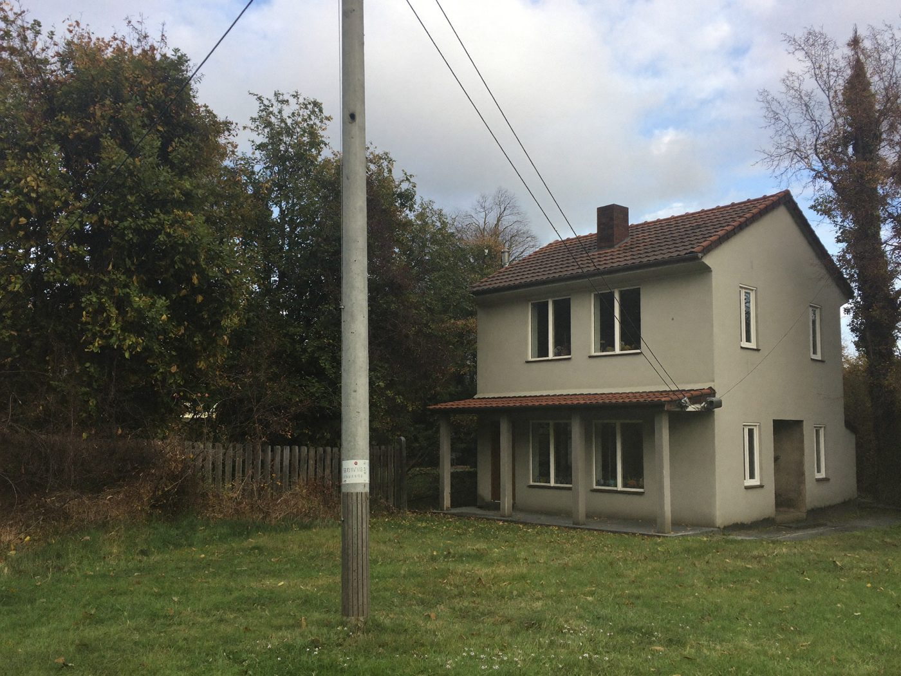
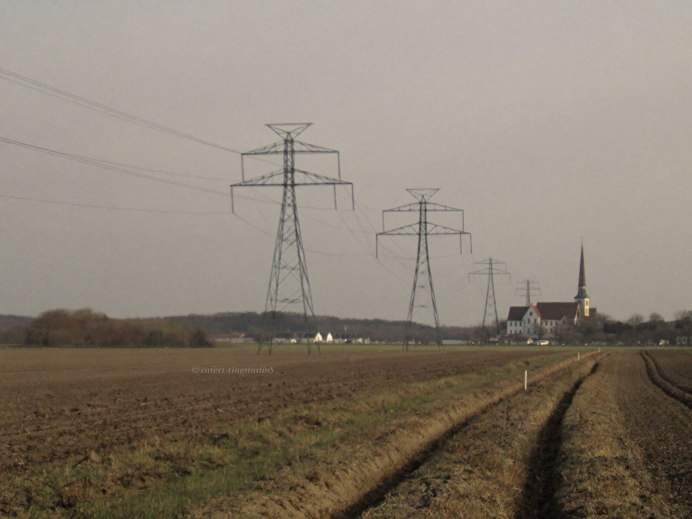
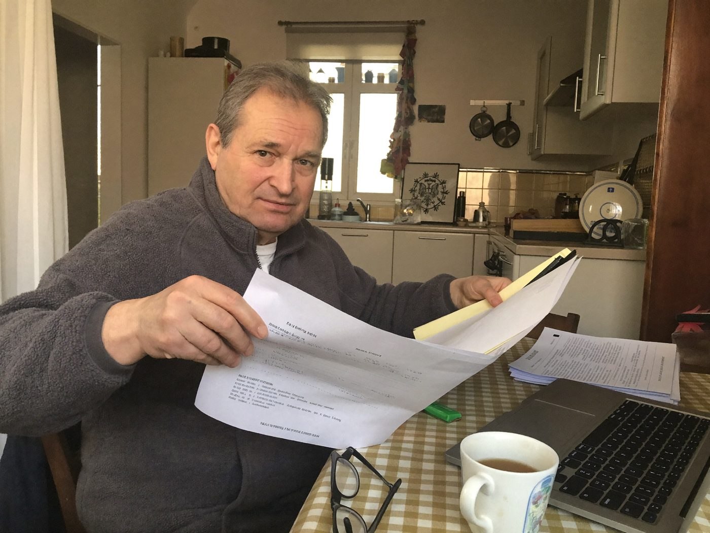

Jeśli zakład energetyczny korzysta z Twojego gruntu bez umowy i bez decyzji urzędu, Kodeks cywilny pozwala żądać wynagrodzenia za ustanowienie służebności przesyłu oraz za ostatnie lata korzystania z działki. 2 grudnia 2025 r. Trybunał Konstytucyjny orzekł, że energetyka nie mogła „zasiedzieć” takiego prawa przed 3 sierpnia 2008 r.[1]
Wszystkie formalności załatwimy za Ciebie. Ty tylko zaplanuj, jak zainwestujesz odzyskane pieniądze.
Analiza jest bezpłatna. Całość załatwiasz z domu, bez spotkań.

Prawo przewiduje trzy rodzaje roszczeń. Która droga jest dla Ciebie, zależy od tego, czy słup musi zostać i czy przeszkadza Ci w zabudowie.
Roszczenie ma obecny właściciel lub współwłaściciel działki, także jeśli słup stał już wtedy, gdy kupiłeś albo odziedziczyłeś grunt.

Wyrok Trybunału dotyczy tylko sytuacji, w której urząd nigdy nie wydał decyzji pozwalającej na postawienie linii.[1] Szanse są małe, jeśli:
Uczciwie o szansach. Wyrok Trybunału z 2 grudnia 2025 r. nie został opublikowany w Dzienniku Ustaw. Rzecznik Praw Obywatelskich zwraca uwagę, że może to rodzić wątpliwości co do jego skuteczności i że sądy nadal często stosują dawną wykładnię.[3]
W maju 2026 r. Komisja Kodyfikacyjna Prawa Cywilnego nie zarekomendowała zmiany przepisów, a Ministerstwo Sprawiedliwości podzieliło to stanowisko.[3] Sądy orzekają różnie, dlatego każdą sprawę sprawdzamy indywidualnie i mówimy wprost, gdy szanse są słabe.
Kalkulator liczy według metody, którą rzeczoznawca stosuje, gdy brakuje danych z rynku (§ 32 ust. 5 i 6 rozporządzenia w sprawie wyceny nieruchomości z 5 września 2023 r.).[4]
Wartość służebności to iloczyn trzech liczb: powierzchni pasa gruntu zajętego przez linię, ceny metra kwadratowego działki i współczynnika korzystania z pasa. Dla linii napowietrznej rozporządzenie podaje ten współczynnik do 0,5, a dla urządzeń stojących na ziemi, czyli samych słupów, 1.
Wynik to szacunek. W sądzie kwotę ustala biegły rzeczoznawca, a decydują dokumenty, mapa pasa i ceny z Twojej okolicy.

| Jednorazowe wynagrodzenie za służebność przesyłu | – |
| Za bezumowne korzystanie, ostatnie 6 lat | – |
Szacunek, nie oferta ani porada prawna.
Wysyłasz zdjęcia i dokumenty. Zdjęcia słupa i linii z telefonu, numer działki albo adres i pisma od energetyki, jeśli je masz. Dokumenty z urzędów zamawiamy sami (szczegóły niżej). Zajmie Ci to około 10 minut.
Sprawdzamy sprawę. Prawnik z kancelarii sprawdza księgę wieczystą i to, czy energetyka ma decyzję lub umowę. Oddzwaniamy w ciągu 2 dni roboczych i mówimy, czy warto działać.
Podpisujesz umowę. Profilem zaufanym albo odręcznie: drukujesz, podpisujesz i odsyłasz pocztą w kopercie, którą od nas dostaniesz.
Kancelaria prowadzi sprawę. Najpierw wezwanie do zakładu energetycznego i próba ugody, a jeśli trzeba, sprawa w sądzie. Każdy krok widzisz w swoim panelu i dostajesz SMS przy każdej zmianie.
Nie musisz chodzić po urzędach. Od Ciebie potrzebujemy tylko tego, co masz w domu albo co wiesz tylko Ty. Resztę kancelaria zamawia sama na podstawie Twojego pełnomocnictwa.
Opłaty urzędowe za te dokumenty to zwykle 150–400 zł. Kto je pokrywa, określa umowa.
Wybierasz jeden z dwóch wariantów. W obu sprawę prowadzi ta sama kancelaria i w obu masz pełną obsługę do końca.
Opłata na start, a z uzyskanej kwoty połowa zostaje u Ciebie.
Wyższa opłata na start, ale z uzyskanej kwoty zatrzymujesz 75%.
Wynagrodzenie za ustanowienie służebności należy się obecnemu właścicielowi. Za bezumowne korzystanie możesz żądać pieniędzy tylko za okres, w którym byłeś właścicielem, i maksymalnie za 6 lat wstecz (art. 118 k.c.).
Lepiej nie czekać. Każdy rok zwłoki to rok wynagrodzenia, który się przedawnia. Do tego energetyka może twierdzić, że od 3 sierpnia 2008 r., kiedy weszły przepisy o służebności przesyłu, biegnie zasiedzenie. Przy dobrej wierze trwa ono 20 lat (art. 172 k.c.), więc mogłoby się skończyć 3 sierpnia 2028 r. Sprawa w sądzie przerywa ten bieg.
Bezpłatnie na stronie ekw.ms.gov.pl, w dziale III księgi. Jeśli nie znasz numeru księgi, ustalisz go w starostwie albo na geoportal.gov.pl po numerze działki.
Nie. Urząd Regulacji Energetyki wskazuje, że sprawy posadowienia urządzeń i służebności przesyłu nie należą do niego. Trzeba je załatwić z przedsiębiorstwem energetycznym, a gdy nie ma porozumienia, w sądzie powszechnym.[6]
Nie. Zdjęcia i dokumenty wysyłasz przez formularz, umowę podpisujesz profilem zaufanym albo pocztą. Na rozprawę, jeśli do niej dojdzie, zwykle jedzie pełnomocnik.
Tak. Możesz sam wysłać wezwanie do energetyki i złożyć wniosek do sądu. Bezpłatnej porady udzielają też punkty nieodpłatnej pomocy prawnej (gov.pl/web/nieodplatna-pomoc). My bierzemy na siebie dokumenty, wycenę, negocjacje i proces.
Wypełnij formularz i dodaj zdjęcia. Oddzwonimy w ciągu 2 dni roboczych i powiemy uczciwie, czy warto się tym zajmować.
Jeśli wolisz porozmawiać, zadzwoń: +48 000 000 000.